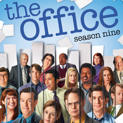

| Home | The Seasons | The Characters | The Reviews |

The Office |
The ninth and final season of the American television comedy The Office premiered on NBC on September 20, 2012, and concluded on May 16, 2013, consisting of 25 episodes. The Office is an American adaptation of the British comedy series of the same name, and is presented in a mockumentary format, portraying the daily lives of office employees in the Scranton, Pennsylvania branch of the fictitious Dunder Mifflin Paper Company. The ninth season of The Office aired on Thursdays at 9:00 p.m. (Eastern) in the United States, as part of the Comedy Night Done Right television block. This is the second season not to starSteve Carell as lead character Michael Scott, although he returned for a cameo appearance in the series finale.
The ninth season largely focuses on the relationship between Jim (John Krasinski) and Pam Halpert (Jenna Fischer). After Jim decides to follow his dream and start a sports marketing company in Philadelphia, Pam begins to worry about moving, and the couple's relationship experiences stress. Meanwhile, Andy Bernard (Ed Helms) abandons the office for a three-month boating trip, and eventually quits his job to pursue his dream of becoming a star, although he soon becomes famous for a viral video. Dwight Schrute (Rainn Wilson) is finally promoted to regional manager. The documentary airs, and a year later, the members of the office gather for Dwight and Angela's marriage as well as a final round of interviews.
Following the decline in ratings from the previous year, the ninth season of The Office managed to stabilize around 4 million viewers per episode. The series finale, however, was watched by over 5.69 million viewers, making it the highest-rated episode that the show had aired in over a year. The season ranked as the ninety-fourth most watched television series during the 2012–13 television year and saw a decrease in ratings from the previous season. Critical reception was moderately positive; although some critics took issue with certain aspects, such as the reveal of the in-series documentary crew, many argued that it was an improvement over the previous season. Others lauded the way the show was able to successfully wrap-up its story arcs. "Finale" was nominated for three awards at the 65th Primetime Emmy Awards, and won forOutstanding Single-Camera Picture Editing for a Comedy Series.